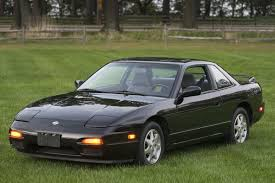
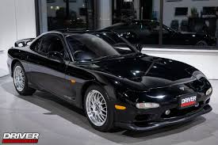
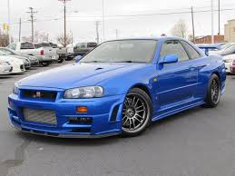
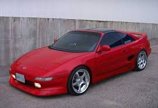
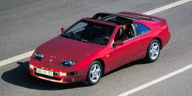

Popular Japanese Project Cars
| Car | Year | Why it’s popular | Photo |
|---|---|---|---|
| Nissan 240sx s13 | 1989-1994 | Photo: 1991 | One of the most iconic drift platforms with huge aftermarket support |  |
| Toyota Supra mk4 | 1993-2002 | Photo: 1994 | Famous for the 2JZ engine and extremely high tuning potential |  |
| Mazda RX-7 FD | 1992-2002 | Photo: 1993 | Lightweight rotary sports car known for balance and tuning culture |  |
| Nissan Skyline GTR R34 | 1999-2002 | Photo: 1999 | Famous all wheel drive sports car known for its racing success and appearances in the Fast and Furious movies |  |
| Toyota MR2 | 1984-2007 | Photo: 1991 | Known for being an affordable mid-engine sports car |  |
| Nissan 300zx | 1989-2000 | Photo: 1990 | Popular 90s twin-turbo sports car famous for winning the GTS class, and placing 5th overall at the 24 hours of Le Mans |  |